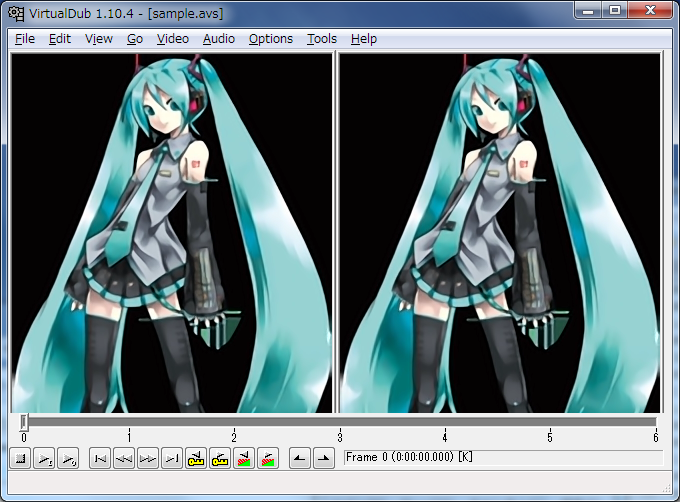

waifu2x Avisynth Plugin
waifu2xAvisynth は、waifu2xの変換処理をAvisynthのフィルタとして利用するプラグインです。 waifu2xのC++実装であるwaifu2x-converter-cppを内部的に利用しています。

必要環境
- Avisynth 2.6/x86
- 潤沢なCPUリソース
Waifu2xフィルタは非常に重く、作者のCore i5-3570S (Haswell Ivy Bridge) 環境では、出力解像度600x928で0.02fpsほどでした。
Wineでも動くと思いますが、確認していません。
使い方
Waifu2xAvisynth.zipをどこかに展開後、Waifu2xプラグインを呼び出すようAvisynthスクリプトを記述し、 avs2avi, avs2pipemodなどの 出力ソフトウェアで出力します。
好きなフォルダで構いませんが、デフォルトではdllのあるフォルダからmodelsフォルダを探し出すので、 dllとmodelsフォルダは一緒に配置することをおすすめします。
img.jpgを2倍に変換するスクリプト例(1フレームのみ)
LoadPlugin("c:\opt\waifu2xAvisynth\waifu2xAvisynth.dll")
# AviSource("c:\temp\source.avi") などなど様々な読み込み処理
ImageSource("c:\temp\img.jpg", end=0)
Waifu2x(nr=1, scale=2)
変換コマンド例
avs2avi sample.avs sample.avi
詳しいAvisynthの使い方については、Avisynth.infoなどを参照してください。
なお、waifu2x-converter-cppと異なり、縮小処理は実装していません。 2の倍数にならない場合は、Waifu2x()呼び出し後に、LanczosResize()などでリサイズしてください。
また、プレビューに耐えないほど遅いので、VirtualDubなどのGUIプレビューが可能なアプリケーションで .avsファイルを開く際は十分注意してください。
また、途中経過をOutputDebugStringで出力しています。 DebugView 等で確認していただくと、状況がわかって便利です。
Waifu2x関数
| 引数名 | デフォルト値 | 範囲 | 説明 |
|---|---|---|---|
| nr | 1 | 0, 1, 2 | ノイズリダクションレベル。0で無効。 |
| scale | 2 | 2, 4, 8... | 倍率。2の累乗。1で拡大無効。 |
| models | (dllと同じパス) | パス | modelsフォルダのパス |
| jobs | (コア数) | 整数。0で自動(コア数) | ジョブ数 |